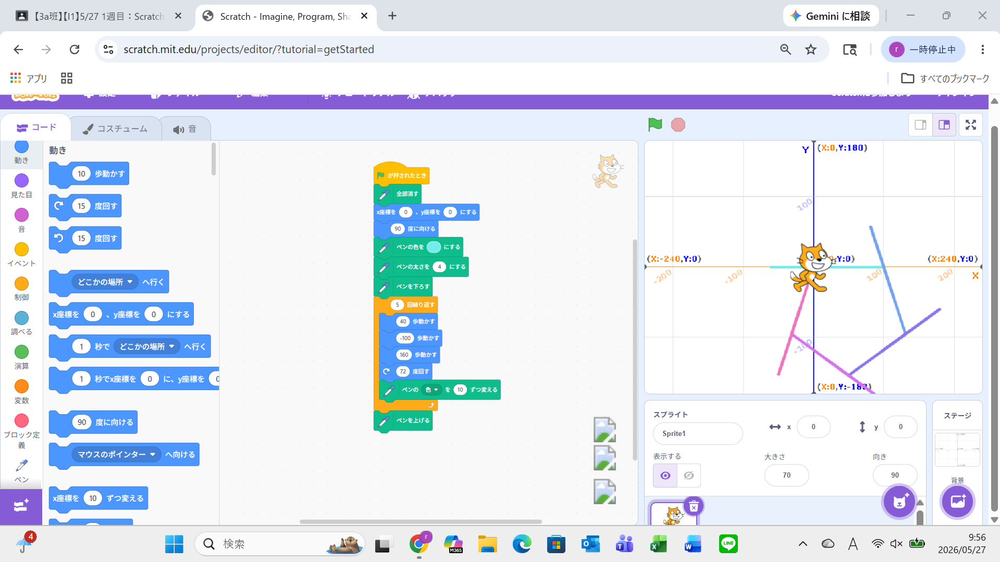
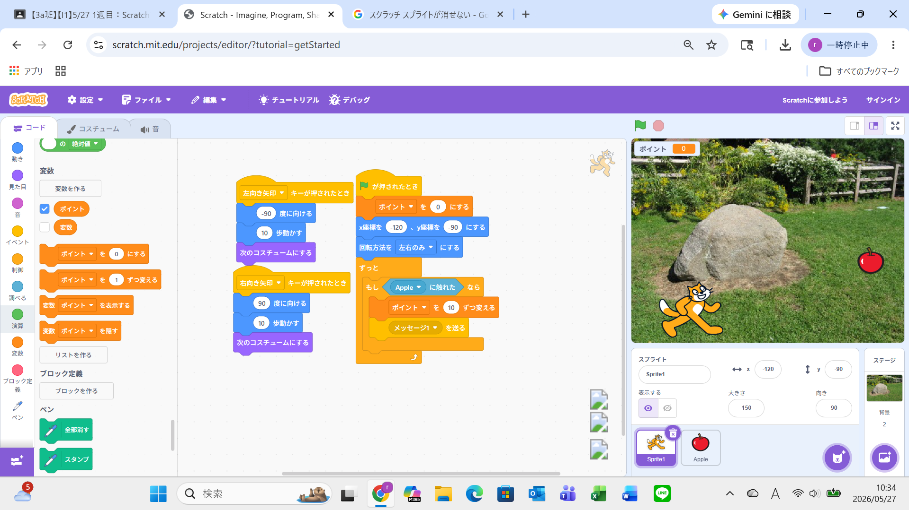

1週目のレポート ： 公大高専１年実習I-1
3a班21番 坂本健真
第1週目
1-1 サイエンスアート

1.内容
文字のプログラミングとは違い、猫を90度に向けるなど単純で分かりやすいブロックをつかって、
プログラミングを作成した。私は100歩ごとに72度回転させて五角形を作るプログラムを作った。
2.感想
ブロックプログラミングは文字のプログラミングとは違い、小学生でもわかりやすいブロックで作成できるため、
とても楽しむことができた。その割にはとても複雑そうなゲームなども作れるため奥が深いと感じた。
1-2 ゲーム

1.内容
猫を操作して落ちてくるリンゴを拾ってポイントを稼ぐゲームを作成した。猫の操作だけでなく
猫にりんごが触れたときのプログラムも作成した。
2.感想
猫の操作やりんごを落とすプログラムはとても簡単だったが、
猫に触れたときどのようなプログラムを実行すればいいか作っている中とても難しく感じた。
1-3 ホームページ作成
私のホームページ
1.内容
作成されていたプログラムの中の指定された場所に自分について書くことで、
自分についてのホームページを作成することができた。
2.感想
私は今までホームページを作成するには、作ったスライドなどを会社に送信して許可が下りないと
だめだと思っていたが、gifthubを使うことで誰でも作れることに驚いた。
各ページへのリンク
1週目のレポート
2週目のレポート
3週目のレポート
私のホームページ